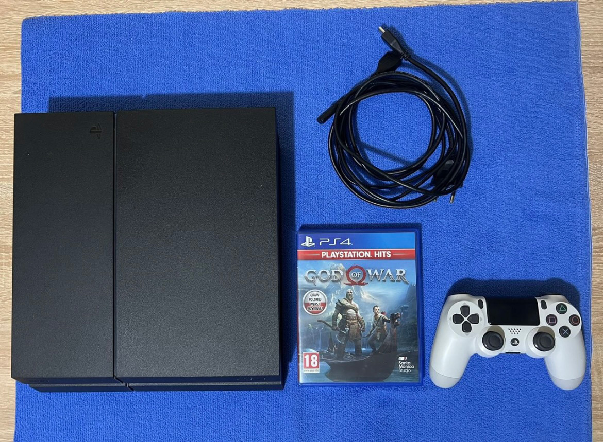

Моей мечтой с 4 класса было однажды поиграть на PS4 или даже приобрести свою приставку. Вплоть до 2021 года, на протяжении 6 лет моя мечта оставалась не реализованной. И все изменилось, когда в начале я попросил PS4 у друга, а уже после купил свою. Давайте расскажу об этом опыте.
У меня была версия Slim 2016 года и Fat матовая 2013 года. Сильные отличия заметны в дизайне и в размере, Sim, как и подобается, оказалась меньше и тоньше Fat, даже тише. Вопрос шума актуальный и если консоль работает тише — это явно плюс. По поводу дизайна, мне он нравится во всех версиях. Уменьшенный вес — тоже плюс, если вы берете PS4 с собой, я же так не делал. Поэтому лично для меня между версиями минимум отличий.
Как уже сказал выше, дизайн PS4 мне нравится, что у Fat, что у Slim. Кроме глянцевой панели у PS4 первых версий, тут уже поменьше, просто одна из панелей оказалась не матовой, странно..
PlayStation 4 чуть больше PS3 Super Slim и сильно меньше PS5. Это удобно, если нужно взять приставку с собой. Я перевозил её куда-то 2 раза и в мой портфель она вмещается впритык, но у меня маленький портфель для ноутбука размером не более 14 дюйм.
На PS4 Fat есть красивая полоса, которая работает при включении, игре или когда консоль переходит в спящий режим. Это выглядит красиво.
Вот за что обидно — в 2013 году, когда выходила консоль, еще не был так принят стандарт Type-C. Его нет в геймпаде DualShock 4, его нет и у самой приставки, это минус.
Про шум консоли говорят довольно часто. Лично я не замечал его, потому что играл в наушниках для большего погружения. Возможно этот шум присутствует. И если консоль давно не чистилась из-за пыли шума будет больше.
Я попытался разобрать консоль, но остановился на моменте, когда вытащил блок питания и нужно отсоединить кабели. После разбора MacBook 2017 года я не хочу особо разбирать технику для её чистки, неправильно вытащишь кабель или как-то заденешь — и все, попадешь теперь на ремонт.
Лично меня очень радует система PS4. Да на самом деле, почти всех приставок от Sony, что с PS1 до PS5, что PSP, что PS Vita. Они все выглядят замечательно и в случае со старыми приставками и консолями хорошо умеют погрузить в ностальгию.
Красивые переливающиеся синие цвета системы, её прекрасные звуки, запуск игр — это все очень красиво и очень радует меня.
Я проходил игры в 720p на старом некрасивом телевизоре, на котором ужасная цветопередача в 30 fps. И получил ли я удовольствие? Да, в полной мере. Может я просто не такой требовательный к картинке, но когда я играл в The Last Of Us 2 на PS4, я думал только о игре и меня не смущала картинка в 720@30. Да, когда я перепроходил в 1080p с 60 fps на PS5 — я смог заметить больше деталей, которые пропустил на игре в PS4. Но я полностью проникся историей что там, что там.
PlayStation 4 рендерит изображение в 900p с 30 кадрами в секунду. Для того, чтобы приятно поиграть с такими характеристиками, нужно потратить от 15 до 30 минут на привыкание. Это очень легкая задача, так как игровой процесс затягивает тебя и на большее время. Именно поэтому я не вижу проблем в игре на PS4. Да, приятно осознавать, что в PS5 картинка стала лучше, но PS4 отличный вариант с учетом цены и количества игр.
Поколение PlayStation 4 очень богато на эксклюзивы. И пусть сейчас часть из этих игр перестали быть эксклюзивами, этот факт никак не печалит и поколение данной консоли остается прекрасным с большим количеством классных игр:
И многие другие игры, в которые так и хочется поиграть!
Я покупал приставку зимой, когда готовился к экзамену по матанализу. Решил оторваться и посмотреть объявления и так получилось, что одно из них было в моем городе поблизости со мной. И уже тем вечером я настраивал PS4, а не готовился к матанализу.
За 15 тыс. руб. я приобрел PS4, 2 геймпада, подставку для них и диск FIFA 20. Я купил себе несколько игр, в которые хотел поиграть и которые хотел пройти. В итоге я смог продать все за ту же стоимость.
Самое главное, если будете продавать консоль — продавайте её с геймпадом, иначе востребованность в консоли будет меньше.
Я оказался очень доволен своей покупкой. PlayStation 4 — желанное поколение и я рад, что смог не только поиграть в нее, но и приобрести свою консоль. Желаю каждому, чтобы его мечты исполнялись!
{% endblock %}